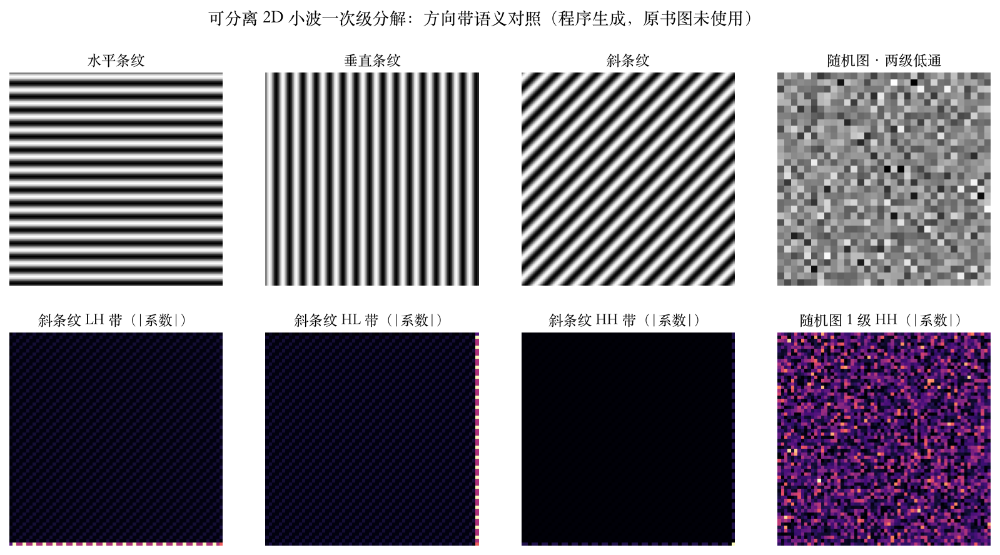
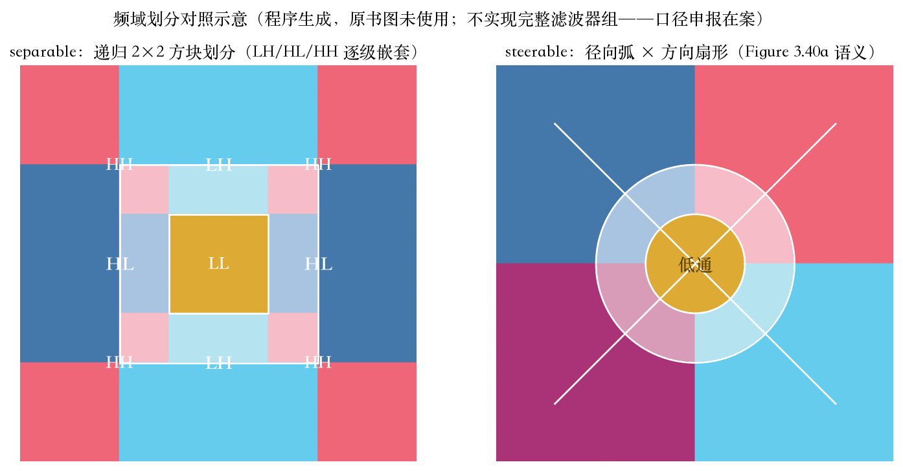
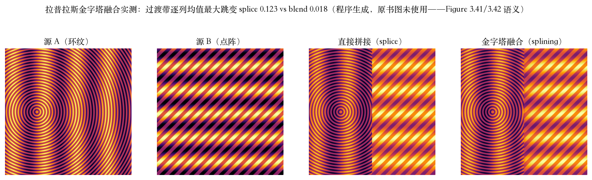

原书第 159–160 页 · 小波与金字塔
小波和金字塔，账怎么算
小波在空间和频率上同时定域。
金字塔超完备：系数比像素多。
小波是紧框架：系数总数等于像素数。
128² 图：总数 16384，细节带占 3/4。
依据：原书第 159–160 页
两笔账
金字塔：21824/16384≈1.33
小波：16384/16384=1.00
紧框架递归多少级都平
正课第二十三集
01 / 6
原书第 161 页 · 二维小波
先行后列，三个方向带
一次分解：细节带 3/4，低频 1/4。
先沿行水平分解，再沿列垂直分解。
三个带：HH、HL、LH。
横条纹进 LH 43.9，竖条纹进 HL 43.9。
依据：原书第 161 页 + 本集实验

方向带语义对照：上排横/竖/斜条纹，下排斜条纹 LH/HL/HH 与随机图 HH｜程序生成，未用教材或论文原图
正课第二十三集
02 / 6
原书第 162–163 页 · 提升
拆开算，装得回
预测：奇数位减偶数位均值，得高通小波。
修正：偶数位加回 1/4 高通小波，变低通。
有效低通核 [−1/8, 1/4, 3/4, 1/4, −1/8]。
复算误差 1.11e-16，系数和 1，Nyquist 增益 0。
依据：原书第 162–163 页 + 本集实验
d = 奇 − 偶均值
e = 偶 + ¼(d
左
+ d
右
)
合成端反序、变号；两端系数对不上，误差 2.486
正课第二十三集
03 / 6
原书第 164–165 页 · 可导向金字塔
径向弧与方向扇
可导向：更旋转对称、更有方向选择性。
三个好处：超完备、方向选择、自逆。
应用：纹理分析与合成、图像去噪。
频域划分：径向弧加方向扇形。
依据：原书第 164–165 页

频域划分对照：左=可分离 2×2 方块，右=可导向径向弧与方向扇形｜程序生成，未用教材或论文原图
正课第二十三集
04 / 6
原书第 165/167 页 · 图像融合
低频慢混，高频快混
每幅图各自分解成拉普拉斯金字塔。
每带乘平滑权重，低频慢混防重影。
直接拼接跳变 0.1231，融合后 0.0175。
遮罩过渡带逐级 0/4/8/16/32/64 列。
依据：原书第 165/167 页 + 本集实验

融合四联：源 A、源 B、直接拼接、金字塔融合｜程序生成，未用教材或论文原图
正课第二十三集
05 / 6
收束 · 下一集
账算平，缝收好，下一站几何变换
紧框架账平：16384 不变；金字塔多 1/3。
提升：完全重构 1e-16；两端失配 2.486。
融合：0.0433 对 0.4872，左区更像 A。
下一集：图像扭曲改的是定义域。
依据：原书第 159–168 页 + 本集实验
三步
算账：紧框架 16384
构造：提升 + 可导向
融合：跳变 0.12→0.018
正课第二十三集
06 / 6